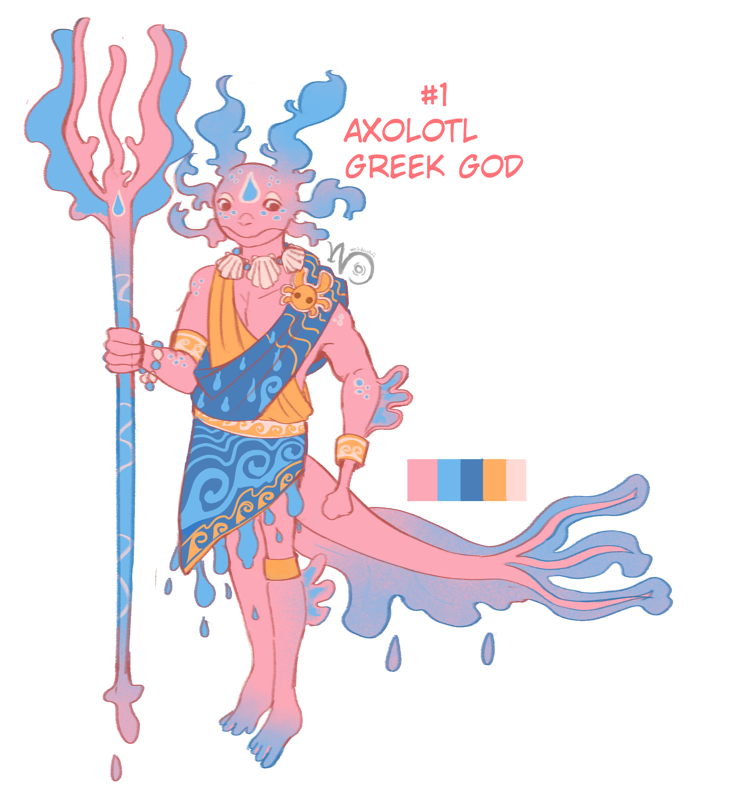
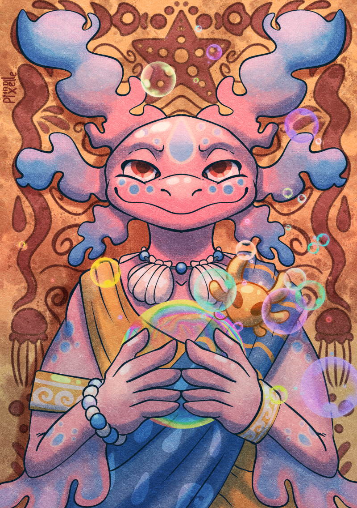
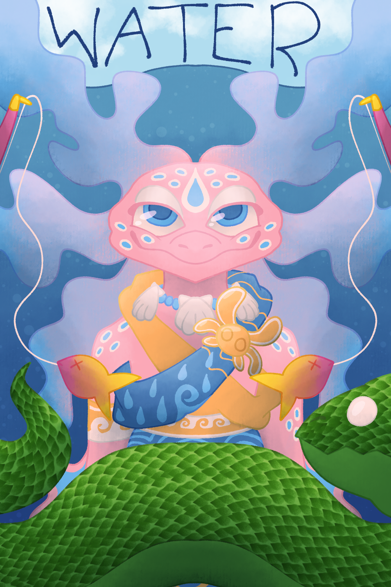
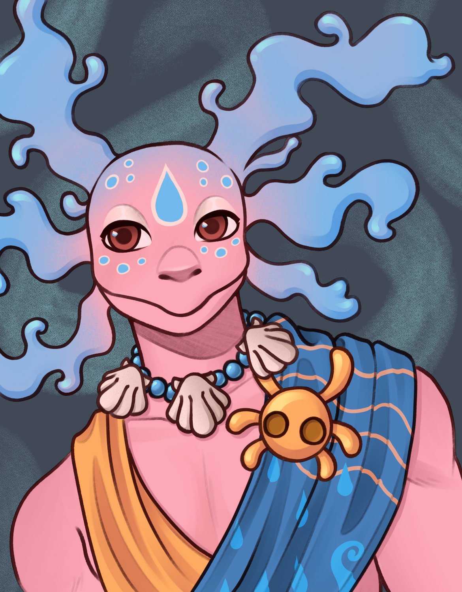

Made by MadPixelle
Made by MadPixelle
Ageless | None
Solémé is a deity of the Félicie cult representing the ocean and the sea, the marine ecosystem, fishing, and storms. It is a deity perceived as fickle.
M A G I C
Solémé commands the sea and marine creatures. Solémé can summon storms or calm the waves, bring fish or ruin a harvest, shatter boats or guide them safely to port.
N O T E S
- Solémé is a highly important deity in Chapelle d'Orée, the largest port city of Félicie, where many fishermen are established.
- When Solémé signifies an abundant catch, calm seas, and mercy, they are usually represented in a humanoid form.
- When the sky turns dark, waves rage, and sea monsters devour boats, their form is instead bestial.
- Solémé is connected to the number 3.
I D E A S
- Any symbolic representation is welcome.
- As a deity, people regularly represent Solémé in their everyday objects: a painted plate, an ornate chair back, a decorated boat sail...
A L L O W E D D E S I G N C H A N G E S
- Solémé is an idea more than a flesh-and-blood being, and their appearance may vary slightly depending on the region. You are therefore free to alter the design as long as you keep:
- The general shape remains an axolotl;
- If colored, keep the blue and pink palette;
- Certain elements must be present in groups of three.
Éternel | Aucune
Soléme est une divinité du culte de Félicie représentant l'océan et la mer, l'écosystème marin, la pêche et les tempêtes. C'est une divinité perçue comme capricieuse.
M A G I E
Solémé commande à la mer et aux êtres marins. Solémé peut faire jaillir des tempêtes ou calmer les vagues, apporter le poisson ou ruiner une pêche, briser les bateaux ou les mener à bon port.
N O T E S
- Solémé est une divinité très importante à Chapelle d'Orée, plus grande ville portuaire de Félicie où de très nombreux pêcheurs sont établis.
- Lorsque Solémé signifie l'abondance de la pêche, la mer calme et sa clémence, on la représente plutôt sous forme humanoïde.
- Quand le ciel est sombre, que les vagues se déchaînent et que les monstres marins croquent les bateaux, sa forme est plutôt bestiale.
- Solémé est liée au chiffre 3.
I D É E S
- Toutes les représentations symboliques sont les bienvenues.
- En tant que divinité, les gens représentent régulièrement Solémé dans leurs objets du quotidien : une assiette peinte, un dossier de chaise orné, une voile de bateau décorée, ...
M O D I F I C A T I O N S A U T O R I S É E S
- Solémé est une idée plus qu'un être de chair, et son apparence peut légèrement varier selon les régions. Vous êtes donc libre de déformer le design à condition de garder :
- La forme générale reste un axolotl ;
- Si coloré, garder le bleu et le rose ;
- Certains éléments doivent être présents par trois.
 Made by Velichorus
Made by Velichorus
 Made by Vukk
Made by Vukk
 Made by hyteriem
Made by hyteriem

Made by Vukk
Made by MadPixelle
Made by CrescentCaribou
Made by Knxwn_UnkxwnC R E D I T
Hover over the images to see the artist's name and link.
Original design by Vukk.